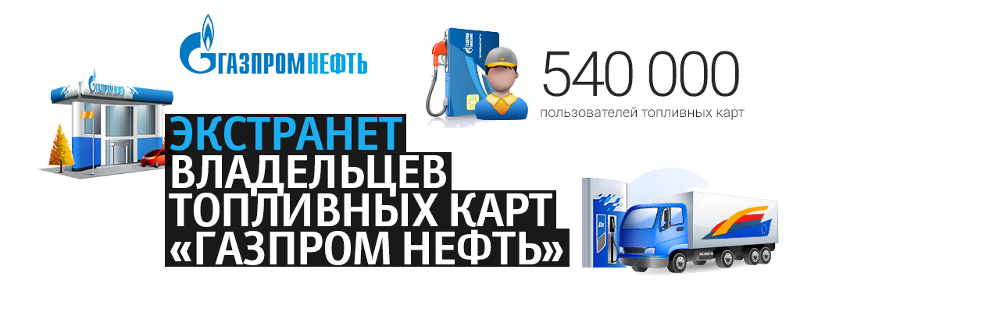

Система онлайн-процессинга по топливным картам «Газпромнефть»
Результаты:- 29% всех посетителей сайта зарегистрированы в личном кабинете.
- 43% пользователей активно используют сервис «Сеть АЗС».
- От 2,5% до 4% посетителей в месяц заключают договоры на обслуживание с помощью сайта.

Сайт для корпоративных клиентов
- Детальная информация об услугах АЗС (кафе, мойка, магазин, стоянка).
- Поиск АЗС по региону, городу или населенному пункту.
- Подборщик АЗС по видам топлива, трассам и услугам.
- GPS-координаты АЗС для навигаторов.
- Полноэкранная карта АЗС с переключением между сервисами Google Maps и Яндекс Карты.
- Генератор короткой ссылки на выборку АЗС с сохранением параметров.
- Онлайн-сервис заключения договора на обслуживание с интеграцией с КЛАДР.
- Интеграция с CRM Газпромнефть через API Application Server веб-сервисами в формате JSON
Личный кабинет
- Сервис планирования маршрута с учетом расхода топлива и промежуточных точек.
- Выбор АЗС внутри маршрута по видам карт, топлива, трассам.
- Расчет расстояния между ближайшими АЗС и от начала маршрута до текущей точки.
- Статистика транзакций и платежных поручений по каждой топливной карте.
- Одновременное управление несколькими картами (заказ, блокировка, разблокировка).
- Настройка ограничений использования по каждой карте (вида топлива, рабочих дней, дополнительных услуг).
- Управление зоной обслуживания карт.
- Статистика по договору: доступные средства, последние операции, список счетов.
- Заказ генерации счета на оплату.
- Генерация отчетов: отчет о текущих лимитах по картам, отчет о картах по статусу за период, оборот по картам по типам клиентов в разрезе цен на продукты и услуги за период, оборот по обслуживанию по видам продуктов и услуг за период, транзакционный отчет за период, протокол транзакций (ведомость).


 max-motors.ru
max-motors.ru
 agv.ag
agv.ag